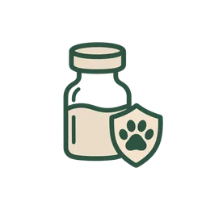
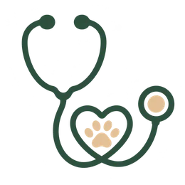
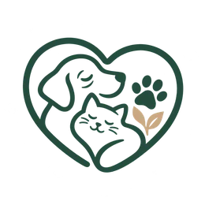
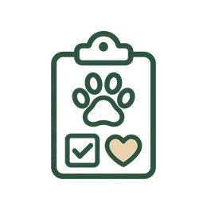
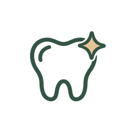
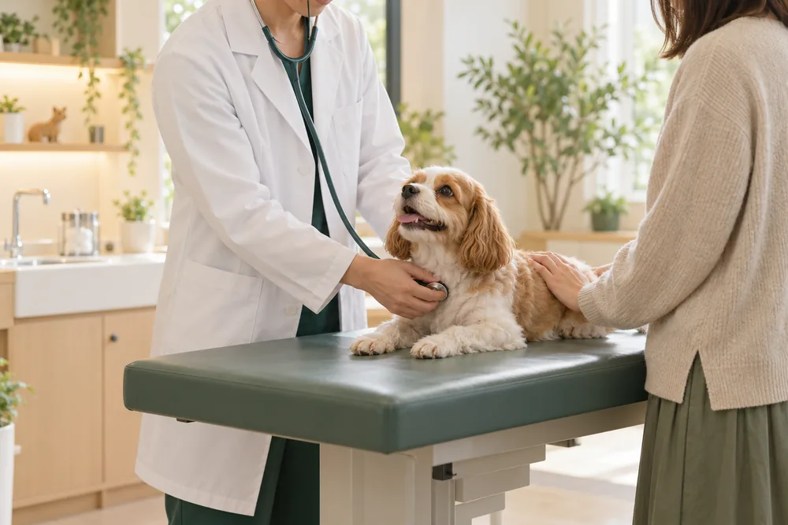
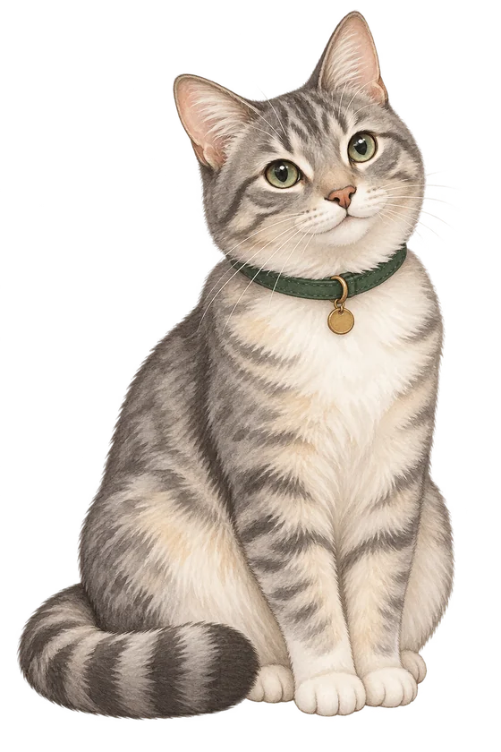

一般診療General Care
食欲がない、吐く、皮膚をかゆがるなど、日々の不調をていねいに診察します。We examine everyday concerns such as loss of appetite, vomiting or itchy skin.
大切な家族の「いつもと違う」に、ていねいに寄り添います。ご来院前のご相談は、お電話でお気軽にどうぞ。When something seems "not quite right" with your family member, we are here to listen. Feel free to call us before you visit.
診察は予約優先です。お電話でご予約のうえ、お越しください。Appointments are preferred. Please call us to make a reservation before you visit.
| 月Mon | 火Tue | 水Wed | 木Thu | 金Fri | 土Sat | 日Sun | |
|---|---|---|---|---|---|---|---|
| 午前AM9:00–12:00 | ● | ● | － | ● | ● | ● | ● |
| 午後PM16:00–20:00 | ● | ● | － | ● | ● | － | ● |
● 診療 － 休診。夜間診療は行っておりません。急患については「急患のご案内」をご確認ください。● Open － Closed. We do not offer night-time care. For emergencies, please see Emergency Care.
院長が研修会に参加するため、午後の診療をお休みします。午前は通常どおり診療します。Our director will attend a training seminar, so we will be closed in the afternoon. Morning hours are as usual.
年末年始のため休診いたします。1月4日（月）より通常診療です。We will be closed for the New Year holidays and reopen as usual on Monday, Jan 4.

年に1回の接種が必要です。登録や注射済票の手続きについてもご案内します。Required once a year. We can also guide you through registration and certificate procedures.
生活環境や年齢に合わせて、接種する種類を一緒に選びます。We choose the right vaccines together, based on lifestyle and age.

季節や暮らしに合わせた予防薬をご案内します。お気軽にご相談ください。We recommend preventive medication suited to the season and your pet’s lifestyle.

健康管理や飼育環境についてのご相談を受け付けています。We offer advice on health care and living environments.
接種は体調のよい日に。ご希望の方はお電話でご予約ください。Please vaccinate on a day your pet is feeling well. Call us to make an appointment.
予約優先制です。はじめての方も、お気軽にお電話ください。We operate on an appointment-first basis. First-time visitors are welcome to call, too.
大切な家族の急な体調の変化に、できる限りお力になれるよう努めています。ご利用の前に、次の内容をご確認ください。We do our best to help when your family member suddenly becomes unwell. Please read the information below before contacting us.
当院では夜間診療を行っておりません。診療は、診療時間内（9:00–12:00／16:00–20:00）のみとなります。We do not offer night-time care. Care is provided only during opening hours (9:00–12:00 / 16:00–20:00).
急患は、当院にかかりつけの動物を対象に対応しています。ただし、状況によっては対応できない場合があり、100％の対応をお約束できるものではありません。あらかじめご了承ください。We handle emergencies for animals that are already registered patients of our clinic. Depending on the situation, however, we may not be able to take every case, and we cannot guarantee a response 100% of the time. Thank you for your understanding.
急患の場合は、お電話でご連絡ください。In an emergency, please contact us by phone.
000-000-0000次の内容を、メッセージに残してください。Please leave a message with the following details.
折り返しのお電話がない場合は、他の動物病院へのご相談もご検討ください。If you do not receive a call back, please also consider contacting another animal hospital.
日々の「ちょっと心配」から、定期的なケアまで。大切な家族の健康を、長い目で支えます。From everyday worries to regular check-ups, we support your pet’s health for the long run.
食欲がない、吐く、皮膚をかゆがるなど、日々の不調をていねいに診察します。We examine everyday concerns such as loss of appetite, vomiting or itchy skin.
各種ワクチンやノミ・マダニ、フィラリア予防で、病気を未然に防ぎます。Vaccines and parasite prevention to keep illness away before it starts.

身体検査や血液検査で、症状が出る前の小さな変化を見つけます。Physical exams and blood tests help us catch small changes early.

歯石や口臭のチェック、ご家庭での歯みがきのコツもお伝えします。Dental checks and tips for brushing at home.
食事や暮らし方、通院の頻度など、年齢に合わせたケアを一緒に考えます。We help plan diet, lifestyle and check-up frequency for aging pets.

「ここに来てよかった」と思っていただけるよう、3つのことを大切にしています。We hold three promises close, so you can feel glad you came.
普段の様子を一番よく知っているのは飼い主さまです。診察の前に、まずゆっくりお話を伺います。You know your pet best. Before every exam, we take the time to hear your story.
検査結果や治療の選択肢を、専門用語をできるだけ使わずにご説明。ご納得のうえで進めます。We explain results and options in plain words, and proceed only when you are comfortable.
年齢・性格・体調はそれぞれ違います。体への負担が少ない方法を、一頭ずつ考えます。Every pet differs in age, temperament and condition. We choose gentle approaches for each one.
ご家族の一員として暮らす動物たちを、地域の皆さまとともに見守ります。We look after the animals that live as part of your family.
予防から日々の健康管理までFrom prevention to daily care

ストレスの少ない診察を心がけますLow-stress, gentle exams
食事や飼育環境のご相談もDiet and housing advice
健康チェックと飼育のアドバイスHealth checks and care tips
動物たちにも飼い主さまにも、安心していただけるチームです。A team that puts both animals and owners at ease.
犬猫の内科・皮膚科を担当。やさしい説明に定評があります。Internal medicine and dermatology. Known for kind, clear explanations.
入院ケアと歯みがき指導が得意。動物の小さな変化も見逃しません。Specializes in inpatient care and teeth-brushing tips. Notices even the smallest changes.
猫にやさしい対応と、うさぎ・小鳥のご相談を担当しています。Cat-friendly handling, plus advice on rabbits and small birds.
お電話とご予約の窓口です。はじめての方の不安に寄り添います。Your point of contact for calls and bookings. Happy to ease first-visit nerves.
待合室でのんびり。ときどきごあいさつに来ます。Relaxes in the waiting room and sometimes comes to say hello.
気まぐれ出勤。窓辺の日だまりがお気に入り。Works whenever she feels like it. Loves a sunny spot by the window.
はじめての来院は、ドキドキするもの。次のものをお持ちいただけると、診察がスムーズです。お手元にあるものだけで大丈夫です。A first visit can feel nerve-wracking. Bringing the items below helps the exam go smoothly. Whatever you have on hand is fine.
他院での検査結果、ワクチン証明書、狂犬病注射済票など。Results from other clinics, vaccine certificates, rabies tag papers, etc.
お薬の名前や説明書、サプリメント、普段のフードが分かるものがあれば安心です。Medicine names or instructions, supplements and a note of the regular food are very helpful.
保険証券や会員証をお持ちください。補償内容の確認にお役立てください。Please bring your policy or member card so we can check your coverage.
予約優先制です。お電話でのご予約をおすすめします。急患については「急患のご案内」をご覧ください。Appointments are preferred; please call to book. For emergencies, please see “Emergency Care”.
病院の敷地内に3台分の駐車場がございます。満車の際はお電話でご相談ください。We have 3 on-site parking spaces. If they are full, please call and we will help.
お電話（000-000-0000）で承ります。受付時間は9:00〜20:00です。By phone: 000-000-0000, 9:00–20:00.
お車でも、電車・バスでもお越しいただけます。You can reach us by car, train or bus.
※地図は水沢江刺駅周辺を表示しています。* The map shows the area around Mizusawa-Esashi Station.
症状のこと、はじめての受診のこと、お気軽にお電話ください。Call us about symptoms or your first visit — anything at all.
急患の方は「急患のご案内」をご確認くださいFor emergencies, please see “Emergency Care”